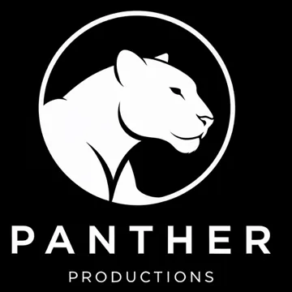
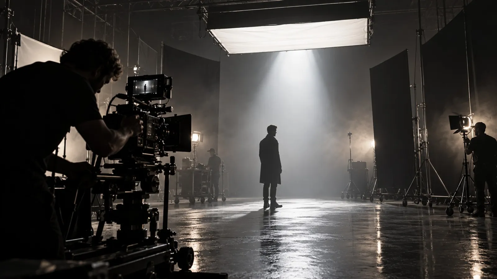

Find the unexpected.
Look closer. Question the obvious. Find the idea that feels worth pursuing.


Panther Productions.
A point of view. A way of making.
We see production as one connected creative journey. An idea becomes a visual language. A shoot gives it life. An edit finds its rhythm.
Every stage deserves the same attention. Every choice should move the story forward.
EXPLORE OUR DISCIPLINES ↗
FROM FIRST SPARK TO FINAL FRAME.Look closer. Question the obvious. Find the idea that feels worth pursuing.
Give each shot a purpose, each detail a place and each project a clear direction.
Shape the image, the rhythm and the finish until the story feels complete.